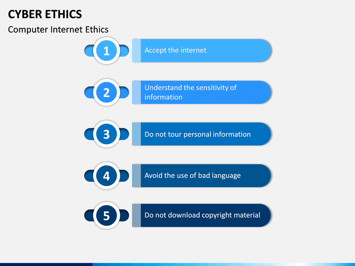

C Y B E R E T H I C S
Cyber ethics refers to the moral principles and guidelines that govern appropriate behavior and conduct in the digital realm. It involves understanding and practicing responsible and ethical behavior in relation to the use of technology, the internet Cyber ethics also emphasizes the importance of digital literacy and education to enable individuals to navigate the digital landscape effectively and responsibly. It encourages critical thinking, ethical decision-making, and fostering a positive and inclusive online environment.
In today's digital age, where technology has become an integral part of our lives, the need for cyber ethics is more crucial than ever, especially for students. Cyber ethics plays a vital role in guiding students to make responsible and ethical choices in their online activities. It is essential to understand that the internet and digital platforms offer incredible opportunities, but they also come with potential risks and consequences. cyber ethics emphasizes the importance of respecting the privacy and personal information of oneself and others. Students should be aware of the potential dangers of sharing sensitive information online and should exercise caution when interacting with others, maintaining a strong sense of digital citizenship.